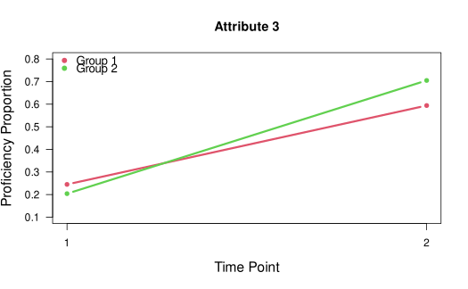
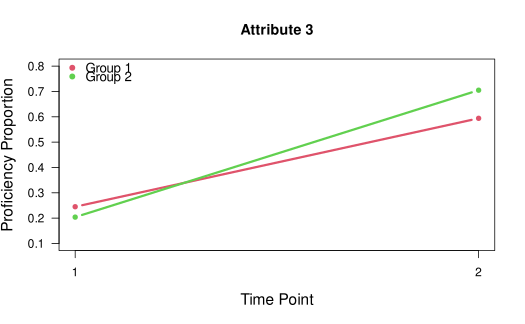

Estimating the multigroup transition diagnostic classification model (TDCM)
Source:R/mg.tdcm.R
mg.tdcm.RdThis function estimates the multigroup TDCM (Madison & Bradshaw, 2018).
Usage
mg.tdcm(
data,
q.matrix,
num.time.points,
rule = "LCDM",
linkfct = "logit",
groups,
forget.att = c(),
group.invariance = TRUE,
time.invariance = TRUE,
progress = TRUE
)Arguments
- data
A required \(N \times T \times I\) matrix. For each time point, binary item responses are in the columns.
- q.matrix
a required \(I \times A\) matrix indicating which items measure which attributes.
- num.time.points
The number of time points (i.e., measurement/testing occasions), integer \(\ge 2\).
- rule
A string or a vector of the specific DCM to be employed. Currently accepts the same values as
ruleintdcm(): "LCDM", "DINA", "DINO", "CRUM", "RRUM", "LCDM1" for the LCDM with only main effects, "LCDM2" for the LCDM with two-way interactions, "LCDM3", and so on. Ifruleis supplied as a single string, then that DCM will be assumed for each item. If entered as a vector, a rule can be specified for each item.- linkfct
A string indicating the LCDM link function. Currently accepts "logit" (default) to estimate the LCDM. Can be specified "identity" to estimate the GDINA model. Also accepts a "log" link function.
- groups
A required vector of integer group identifiers (e.g., 1, 2, 3) for multiple group estimation.
- forget.att
An optional vector allowing for constraining of individual attribute proficiency loss, or forgetting. The default allows forgetting for each measured attribute (e.g., \(P(1 \rightarrow 0) \neq 0\)). This vector is specified to indicate the attributes for which forgetting is not permitted.
- group.invariance
logical. If
TRUE(default), item parameters are assumed to be equal for all groups. IfFALSE, item parameters are not assumed to be equal for all groups.- time.invariance
logical. If
TRUE(default), item parameters are assumed to be equal for all time points. IfFALSE, item parameters are not assumed to be equal for all time points.- progress
logical. If
FALSE, the function will print the progress of estimation. IfTRUE(default), no progress information is printed.
Value
An object of class gdina with entries as indicated in the CDM package.
For the TDCM-specific results (e.g., growth, transitions), use TDCM::mg.tdcm.summary().
References
de la Torre, J. (2011). The Generalized DINA Model Framework. Psychometrika 76, 179–199. doi:10.1007/s11336-011-9207-7
George, A. C., Robitzsch, A., Kiefer, T., Gross, J., & Ünlü , A. (2016). The R package CDM for Cognitive Diagnosis Models. Journal of Statistical Software, 74(2), 1-24. doi:10.18637/jss.v074.i02
Henson, R., Templin, J., & Willse, J. (2009). Defining a Family of Cognitive Diagnosis Models Using Log-Linear Models with Latent Variables. Psychometrika, 74, 191-21. doi:10.1007/s11336-008-9089-5
Johnson, M. S., & Sinharay, S. (2020). The Reliability of the Posterior Probability of Skill Attainment in Diagnostic Classification Models. Journal of Educational Measurement, 47(1), 5–31. doi:10.3102/1076998619864550
Kaya, Y., & Leite, W. (2017). Assessing Change in Latent Skills Across Time With Longitudinal Cognitive Diagnosis Modeling: An Evaluation of Model Performance. Educational and Psychological Measurement, 77(3), 369–388. doi:10.1177/0013164416659314
Li, F., Cohen, A., Bottge, B., & Templin, J. (2015). A Latent Transition Analysis Model for Assessing Change in Cognitive Skills. Educational and Psychological Measurement, 76(2), 181–204. doi:10.1177/0013164415588946
Madison, M. J. (2019). Reliably Assessing Growth with Longitudinal Diagnostic Classification Models. Educational Measurement: Issues and Practice, 38(2), 68-78. doi:10.1111/emip.12243
Madison, M. J., & Bradshaw, L. (2018a). Assessing Growth in a Diagnostic Classification Model Framework. Psychometrika, 83(4), 963-990. doi:10.1007/s11336-018-9638-5
Madison, M. J., & Bradshaw, L. (2018b). Evaluating Intervention Effects in a Diagnostic Classification Model Framework. Journal of Educational Measurement, 55(1), 32-51. doi:10.1111/jedm.12162
Madison, M.J., Chung, S., Kim, J., & Bradshaw, L.P. (2024) Approaches to estimating longitudinal diagnostic classification models. Behaviormetrika, 51(7), 7-19. doi:10.1007/s41237-023-00202-5
Rupp, A. A., Templin, J., & Henson, R. (2010). Diagnostic Measurement: Theory, Methods, and Applications. New York: Guilford. ISBN: 9781606235430.
Schellman, M., & Madison, M. J. (2024). Estimating the reliability of skill transition in longitudinal DCMs. Journal of Educational and Behavioral Statistics.
Templin, J., & Bradshaw, L. (2013). Measuring the Reliability of Diagnostic Classification Model Examinee Estimates. Journal of Classification, 30, 251-275. doi:10.1007/s00357-013-9129-4
Wang. S., Yang. Y., Culpepper, S. A., & Douglas, J. (2018). Tracking Skill Acquisition With Cognitive Diagnosis Models: A Higher-Order, Hidden Markov Model With Covariates. Journal of Educational and Behavioral Statistics, 43(1), 57-87. doi:10.3102/1076998617719727
Examples
# \donttest{
## Example 4: G = 2, T = 2, A = 4
data(data.tdcm04, package = "TDCM")
data <- data.tdcm04$data
q.matrix <- data.tdcm04$q.matrix
groups <- data.tdcm04$groups
# Estimate full multigroup TDCM with invariance assumed.
mg.model <- TDCM::mg.tdcm(data, q.matrix, num.time.points = 2, groups = groups)
#> [1] Preparing data for mg.tdcm()...
#> [1] Estimating the multigroup TDCM in mg.tdcm()...
#> [1] Depending on model complexity, estimation time may vary...
#> [1] Multigroup TDCM estimation complete.
#> [1] Use mg.tdcm.summary() to display results.
# summarize results
results <- TDCM::mg.tdcm.summary(mg.model)
#> [1] Summarizing results...
#> [1] Routine finished. Check results.
# plot results
TDCM::tdcm.plot(results)

 



 #> [1] **Check the plots window for line and bar plots for group growth proportions.
# }
#> [1] **Check the plots window for line and bar plots for group growth proportions.
# }